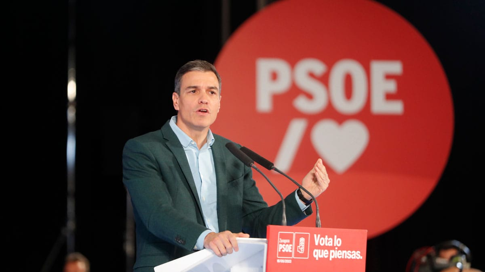

Actualidad|PsoeFC
El PSOEFC se prepara para una temporada llena de desafíos y ambiciones
El equipo de fútbol del PSOEFC está listo para darlo todo en la cancha esta temporada

16 de octubre de 2023
En una conferencia de prensa celebrada en el estadio local, el equipo de fútbol del PSOEFC reveló sus ambiciosos planes y expectativas para la próxima temporada. Con una plantilla renovada y una fuerte determinación, el PSOEFC está dispuesto a enfrentar nuevos desafíos en su búsqueda de la gloria en el mundo del fútbol.
El presidente del club, Pedro Sánchez, expresó su entusiasmo por el futuro del PSOEFC, afirmando: "Estamos comprometidos en trabajar duro y en hacer todo lo necesario para lograr el éxito en esta temporada. Tenemos una plantilla talentosa y un equipo técnico dedicado que está dispuesto a llevar al PSOEFC a nuevas alturas".
El entrenador del equipo, Luis Enrique, quien también es el seleccionador nacional de la Selección Española de Fútbol, destacó la importancia de la cohesión del equipo: "El trabajo en equipo es esencial en el fútbol. Estamos enfocados en fortalecer nuestros lazos y en construir una unidad sólida en el campo. Nuestro objetivo es jugar un fútbol atractivo y eficiente".

El PSOEFC ha realizado algunas contrataciones clave para reforzar su plantilla, incluyendo a jóvenes talentos y algunos jugadores con experiencia internacional. La afición del PSOEFC se encuentra emocionada ante la perspectiva de ver a estos nuevos fichajes en acción.
Además, el club está planeando una serie de eventos y actividades para involucrar a la comunidad local y fortalecer su base de seguidores. Esto incluye programas de desarrollo juvenil y colaboraciones con organizaciones benéficas locales.
Con una temporada emocionante por delante, el PSOEFC está listo para dar lo mejor de sí en el campo y competir a nivel nacional e internacional. Los seguidores del equipo esperan con entusiasmo lo que depara el futuro y están ansiosos por vivir una temporada llena de emociones y triunfos para su club favorito.